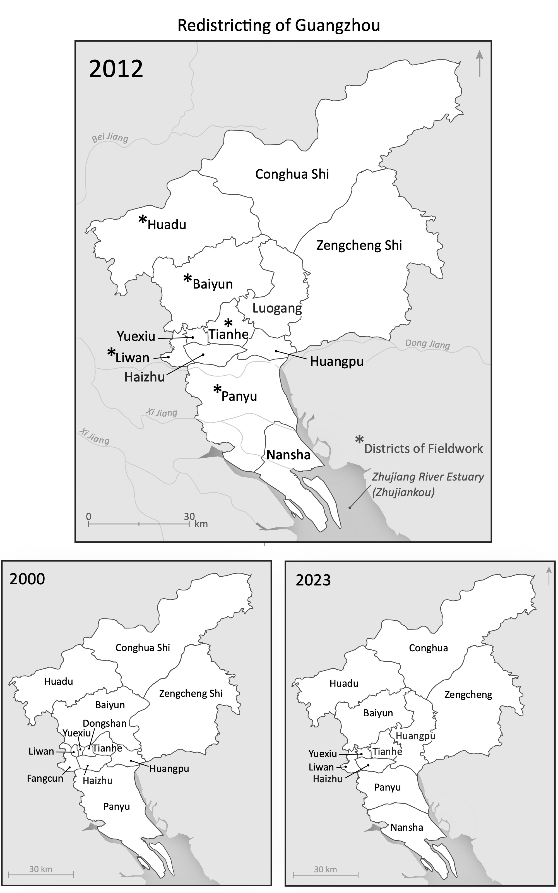

For UBC Disaster Resilience Research Network Report


For Steven Harrell, published in An Ecological History of Modern China(2023)

For Amy Zhang

For UBC Disaster Resilience Research Network Report
For UBC Disaster Resilience Research Network Report
For Steven Harrell, published in An Ecological History of Modern China(2023)
For Amy Zhang
For UBC Disaster Resilience Research Network Report

Mapping the Pandemic: A Critical and Creative Cartography
In this semester long honors undergraduate thesis, I analyzed spatial media literacy through critical engagement with maps of COVID-19 and explored creative cartographies and counter mapping practices as a way to make sense of concurrent crises. My final output was an ArcGIS Hub site with text and multimedia, including the 2 storymaps below on Isolation Psychogeography and Critical Cartography.
Deep Mapping Theory as Praxis
Master's Thesis in Geography
See negative-spaces.github.io